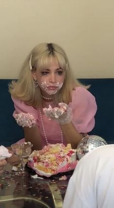

Natacha Brisson
Persévérante et étant de nature enjouée, je suis très impliquée dans les projets que l’on me confie, de plus je peux faire face à des situations compliquées. Je suis aussi très créative du fait de mon intérêt pour l’art.
Passionnée de cinéma, de musique, et d'art. Réalisation montages vidéos.
Les principaux sujets abordés sont: Stratégie de la communication, media planning, conception et rédaction, relations presse, relations publiques, web rédaction, sociologie des médias, sémiologie de l'image, PAO, histoire de l'art et culture publicitaire. De plus nous avons aussi une formation dans le Marketing stratégique, buzz marketing et marketing viral, stratégie digitale, stratégie des marques, négociation client et prestataire.
Option Facultative et Lourde d'Arts plastiques, 8 heures de cours d'arts par semaine que ce soit au niveau pratique que pédagogique.
Je maîtrise les logiciels créatifs comme Photoshop, illustrator, premier pro, imovie et Canva. Ainsi que les logiciels Office comme Word Excel Powerpoint. Je parle bien l'anglais grâce à mon stage et mes jobs à l'étranger.
Création d'entreprise de community management et de création de contenu. Je développe les réseaux sociaux des petits magasins de Tours dans le but d'augmenter leur visibilité et de fidéliser leur clientèle.
Stage de 2 mois, mon rôle était de créer leur communication qui était à l'époque inexistante.
Stage de 2 mois aux Pays-Bas dans une entreprise de e-learning. J'ai pu analyser le marché Français pour l'internationalisation de l'entreprise. J'y ai développé mon anglais et ma capicité à m'adapter à une nouvelle culture !
Entreprise de démarchage téléphonique, appels des professionnels dans le but de vendre des abonnements téléphoniques. CDD de 3 mois.
Entreprise de démarchage téléphonique, appels des professionnels dans le but de vendre des abonnements téléphoniques. CDD de 3 mois.